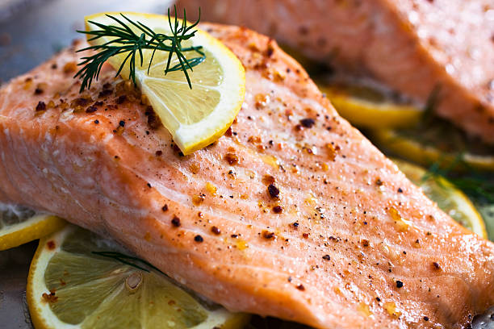

baked salmon recipe!
home.

baked butter salmon!
since we have 2 dessert recipes, here's a savory protein
dish to balance everything else out! this dish is super
quick and simple, so it's a perfect dish to start out
learning.
recipe credits to downshiftology!
ingredients!
- 4 6 oz salmon filets
- 2 tbsp melted butter
- 1/2 tbsp lemon juice, and lemon slices
- 3 minced garlic cloves
- salt and ground pepper to taste
- 1 tsp finely chopped parsley
- 1 tsp finely chopped dill
steps
- preheat oven to 375 degrees F
- let salmon come to room temperature for around
15 minutes
- mix lemon juice and butter in a small dish,
then spread all over salmon
- top salmon with garlic, salt, and pepper
- bake for around 12-15 minutes
- garnish with dill and parsley, and serve!
lastly, enjoy!!